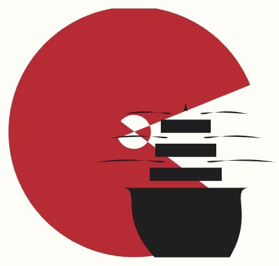
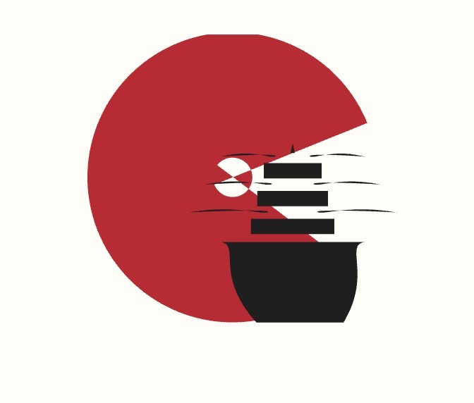

Doğru kaynak: son gönderdiğin görsel
Önceki Concept 03 panosu ve ona dayalı SVG adayları bu çalışmanın kaynağı değildir. Aşağıdaki SVG, bu sayfadaki 672×572 PNG’den çıkarılmış yeni, onay bekleyen izleme adayıdır.
Gönderdiğin kaynak görsel

Yeni SVG izleme · renkli
Yeni SVG izleme · tek renk
Kaynak dosya

Durum: Kelime-marka dahil değil. Bu bir SVG çalışma adayıdır; kanonik/approved olarak kilitlenmedi. Renk ve konturlar doğrudan yeni PNG’den alındı; raster kaynak çözünürlüğünün ötesinde detay iddiası yoktur.